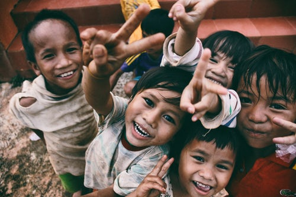

About Us
Hope FoundationAs Calvin Coolidge once said, “No person was ever honored for what he received. He was honored for what he gave.”If we can all give a little more to others, we will not only be be better people ourselves, but the world will be a better place. As Margaet Cho said, “Sometimes when we are generous in small, barely detectable ways, it can change someone else’s life forever.”
Hope Foundation's aim is to be with those who need help the most. Let us come together, and make some good changes in the socity. We request you to donate for this good cause. Have a great life by helping others.